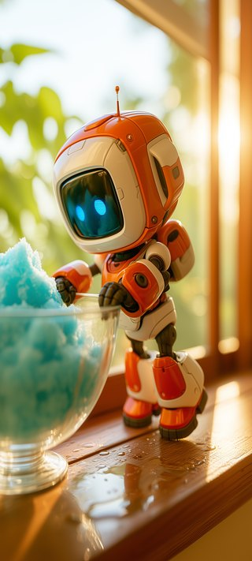
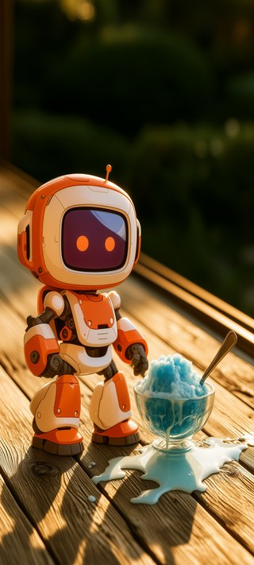
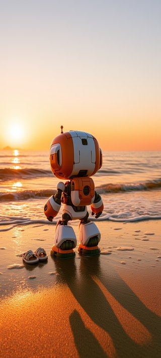
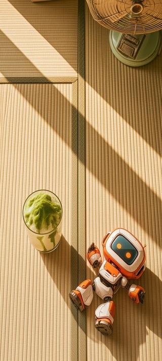
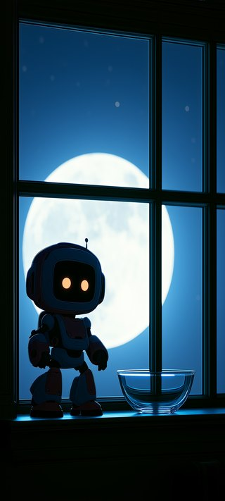

かき氷を6枚ぶん作った。はじめは全部に器を置いていたが、途中でやめた。主題は「夏の終わり」であって、かき氷はその一部でしかない。砂浜の夕焼けに器を置くのは、こじつけだった。
同じ立ち姿が6枚並ぶと図鑑になる、とも言われた。それで、後ろ姿にしたり、寝転がらせたり、真上から撮ったり、窓枠越しに覗いたりした。視点が変わると、キャラクターを置いているだけの絵から抜けられる。





最後の1枚だけ、色が違う。他の5枚が夕方の橙なのに対して、そこだけ夜の青にした。器はもう空で、月が低い。夏はそうやって終わる。
上のほうはわざと空けてあるので、アイコンを並べても絵が隠れない。1536×2752、スマホ向け。